注意：这个教程目前已经作废，可以当作学习了解心得使用，但是不建议上正式环境
背景
之所以用这种方式部署，是计划购买一个新的服务器（性能较强），用于将目前的机房的一些实体机淘汰，统一托管到Proxmox上面管理。考虑到公司现在不可能做双机热备份，只能在一台机器上实现，因此磁盘数据的保护尤为重要
现在设想是这样的，由若干块硬盘（大于4块）组建成RAID6阵列（禁止组建RAID5），其中需要1-2热备盘。在RAID阵列上，组建LVM，实现硬盘的可扩容。这是一个服务器基础的配置方向。可以根据需要，将固态硬盘和机械硬盘分开配置，不过这个不在今天的讨论范围内
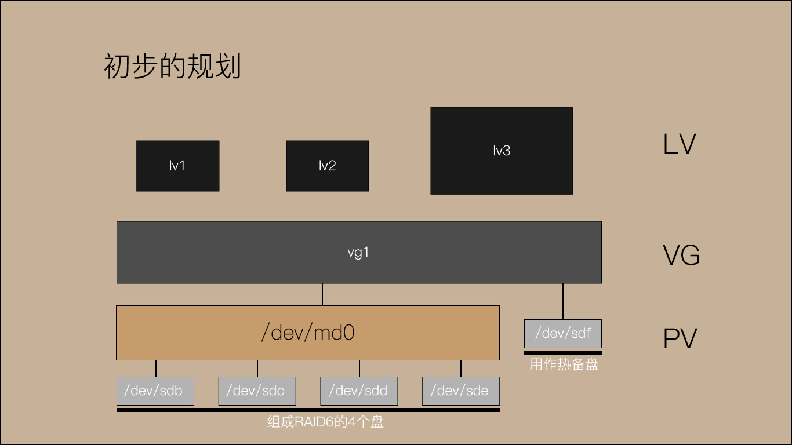
以下的模拟实验，基于Centos7。收集了5块真正的实体硬盘（不包括系统盘）（250G），用于实验（是不是很牛x)
搭建RAID6
查看系统硬盘情况
首先，在系统中，我们看一下目前的磁盘配置
# lsblk
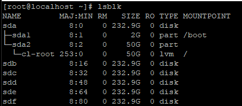
可以看到，我们有sd[b-f]五块硬盘，其中sda是我的系统，这里我们不要管它
创建硬盘分区
如果你的硬盘不是全新，有分区以及数据，请删除所有分区数据，这一步，你可以在Windows PE 下操作，当然，你会Linux也行
在全新硬盘下，我们执行如下操作
# fdisk /dev/sdb
fdisk针对的是mbr等小容量的硬盘，如果硬盘容量超过2T的gpt，请使用gdisk这个命令，操作都是类似
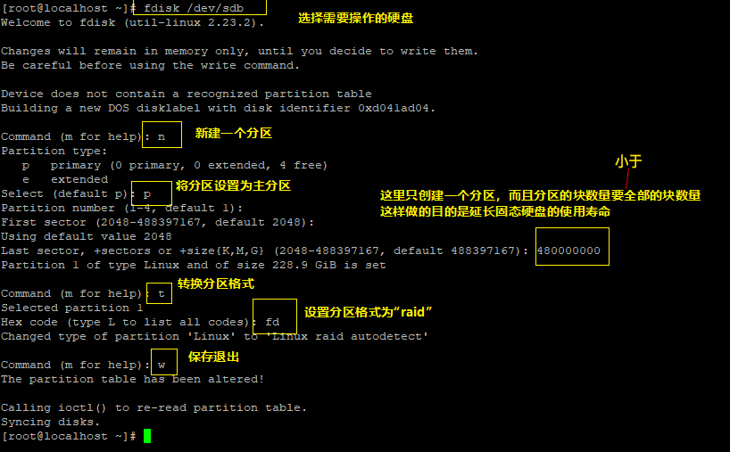
上面是针对 /dev/sdb 这个硬盘进行操作，后面我们对剩下的四个硬盘 （/dev/sd[c-f]）进行上面的操作。虽然有点枯燥，但是集中一点注意力，不要出错，不然就是自己给自己挖坑。。。。。
下面是创建之后磁盘的情况
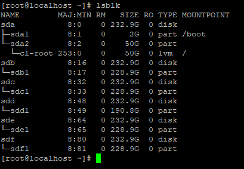
之后，我们要检查一下磁盘是否存储有其他类型阵列的数据，这个很重要，如果有其他阵列的数据，这个磁盘是用不了的，我们必须清除这些数据后，才能将这个磁盘用于RAID的构建
# mdadm -E /dev/sd[b-f]1
这里，我们使用了 mdadm 这个命令，这个就是 linux 内建的软阵列命令。这个命令适用于检查在硬盘分区是否存在其他阵列的信息
如果一切正常，则应如下显示
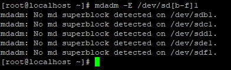
同样的，我们对硬盘也检查一遍
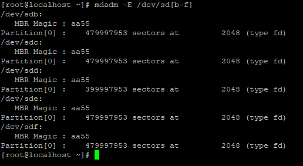
如果是上面的显示，我们可以继续往下面走，不是的话，请查看下面教程的【删除阵列】篇章，有具体的解决步骤
创建阵列
# mdadm -C -v /dev/md0 -l6 -n4 /dev/sd[b-e]1 -x1 /dev/sdf1
- C : 创建阵列
- v : 显示详细信息
- /dev/md0 : 创建后阵列的磁盘文件
- l : 创建RAID的等级，我们创建的RAID6 ，所以后面接数字6
- n : 创建阵列磁盘的数量，RAID6阵列至少需要四个，所以这里为4
- x : 创建阵列热备盘的数量，我们有五个盘，用了四个，所以，这里数量为1就行了
注意：我们这里使用的磁盘的分区，而不是磁盘本身
热备盘的作用：事先准备一个硬盘，让它处于准备的状态，在阵列的主硬盘坏了之后，热备盘迅速顶替上去，过程无需人工干预
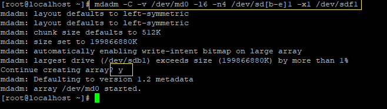
查看创建好的阵列
# mdadm -D /dev/md0
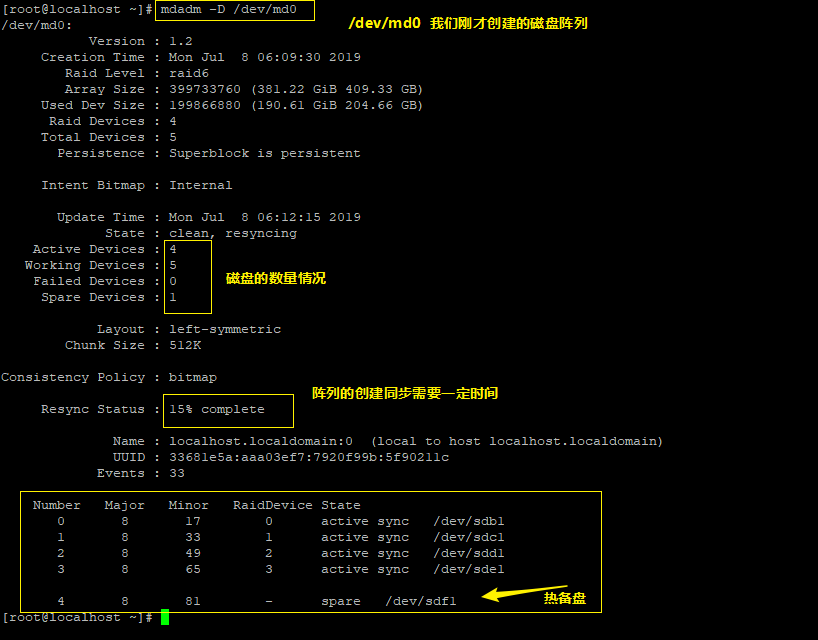
模拟阵列硬盘崩坏
RAID6允许2块硬盘同时出错，在这里，我模拟一个硬盘出错，这里我让sdb这个硬盘出错
# mdadm /dev/md0 -f /dev/sdb1
- f : 指定出错的硬盘（模拟)
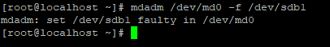
然后，我们运行命令，查看阵列目前的磁盘情况
# watch mdadm -D /dev/md0
其中，watch 是一个定时刷新的命令，它刷新后面的mdadm ，我们要查看的就是下图的修复速度（“Rebuild Status”）
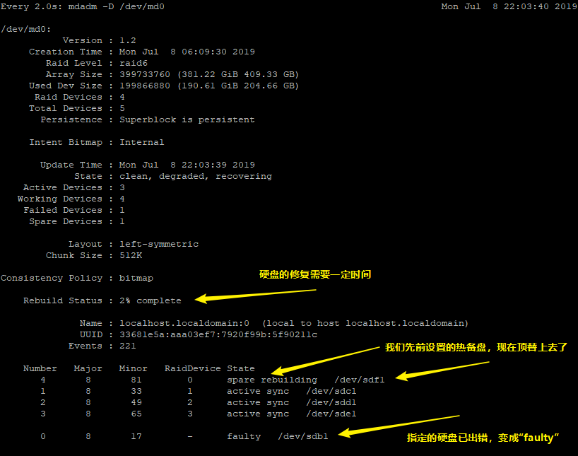
有关硬盘修复的信息：我们磁盘出错后，会被指定为“faulty”状态，不能再使用。这是，我们前面设置的热备盘就会自动替换上去，然后从其他硬盘计算需要恢复的数据。这是一个很耗时间和CPU资源的过程（特别针对企业动不动就上4T这些硬盘），因此在这个过程中，为了防止第二块硬盘出错，我们需要设置阵列为RAID6！不使用RAID5
经过漫长的等待，我们的硬盘修复完成，阵列也正常了
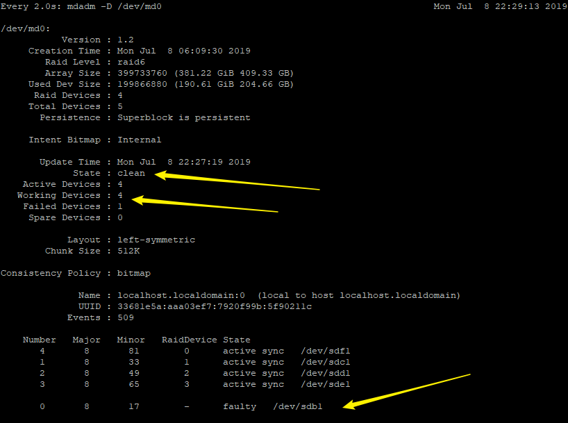
然后，我们可以移除这块损坏的硬盘，或者重启服务器
# mdadm /dev/md0 -r /dev/sdb1
- r : 移除硬盘
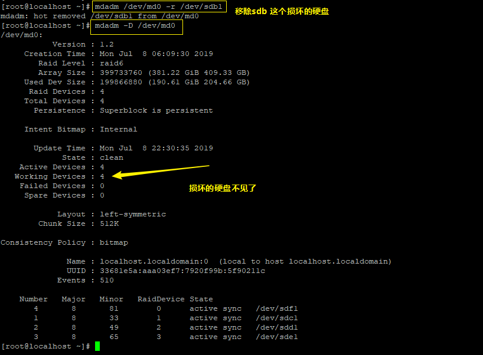
好了，到这里，我们数据就修复成功，可以看到，四块硬盘都是正常的，我们现在的阵列里面没有热备盘了，下面介绍如何为这个阵列添加热备盘
添加热备盘
我们用刚才损坏的那块盘（sdb）为例，将它再次添加回来作为热备盘
我们用 lsblk 命令 查看目前磁盘的情况，可以看到，sdb目前是存在的，但是已经不是阵列磁盘了（不存在md0)
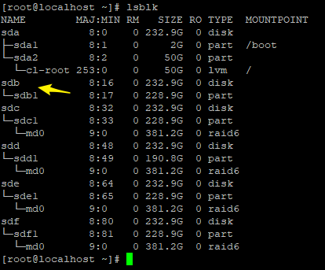
我们用如下命令检查一下它的磁盘信息情况
# mdadm -E /dev/sdb1
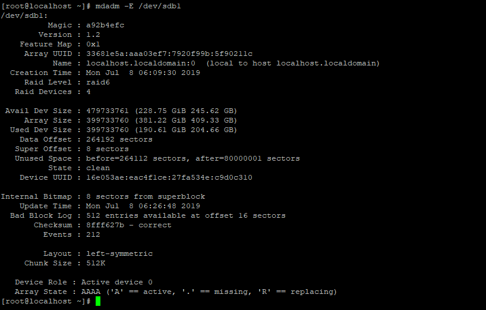
可以看到，它存在阵列的信息，我们需要清除这些信息
# fdisk /dev/sdb
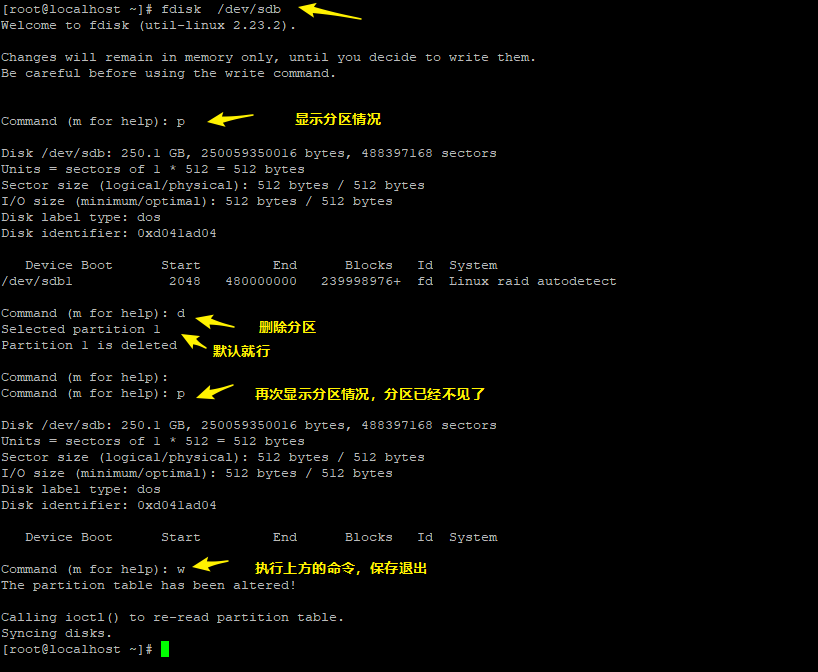
# dd if=/dev/zero of=/dev/sdb bs=1M count=1024
这个命令是擦除磁盘信息用的
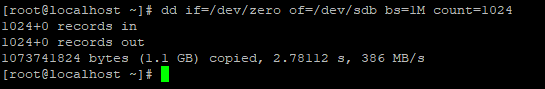
到这里，我们就可以使用这块硬盘了，初始化跟上面章节的步骤一样，先创建分区，转换为raid格式，然后执行下方命令，添加sdb作为热备盘
# mdadm /dev/md0 -a /dev/sdb1
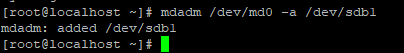
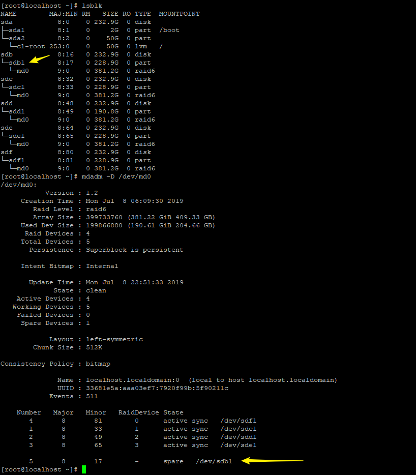
保存阵列配置文件
这一步不是必须的，但是有备无患
# mdadm -D -s >> /etc/mdadm.conf
参考的资料
软RAID管理命令mdadm详解
RAID磁盘阵列的部署(red hat 6.5)
RAID及LVM技术的实现
好了，上面就是阵列的创建方法，如果是一般使用，只需要将/dev/md0 这个设备当作一个普通的硬盘，然后分区，挂载就行了。但是，我们的目标是星辰大海，在RAID的上面，我们需要再建一个LVM，下面介绍LVM的创建
RAID 上方创建 LVM
切记，后面我们针对的硬盘操作，都是 /dev/md0 这个RAID磁盘，而不是 /dev/sd[b-f]这几个真实的硬盘了
首先，需要自己先去了解LVM的一些基础知识，我这里就不介绍了，自己Google，很多教程的
譬如下面这个教程就很详细
还记得上面那张图吗？
我们计划创建一个卷组（vg1) ，然后创建三个的逻辑卷（lv1，lv2，lv3），所用的物理卷是 /dev/md0 ，即我们上面创建的阵列RAID6
创建 物理卷(PV)
# pvcreate /dev/md0
将 /dev/md0 初始化为PV卷，这里我们没有为md0这个RAID创建分区
# pvdisplay
显示创建PV的详情，请忽略上方那个，那个是创建Centos自动创建的
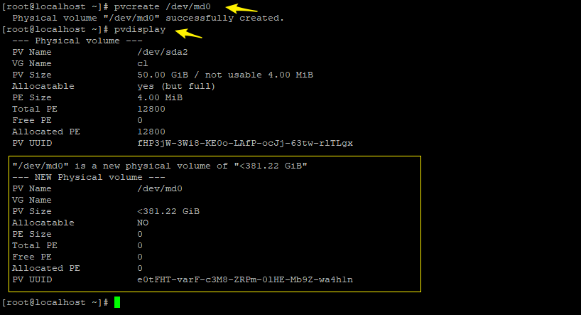
创建 卷组(VG)
# vgcreate vg1 /dev/md0
这里，我们指定一个名称为vg1的VG，使用md0这个PV
# vgdisplay
显示创建VG的详细信息。请忽略下面那个c1，这个是Centos系统自建的
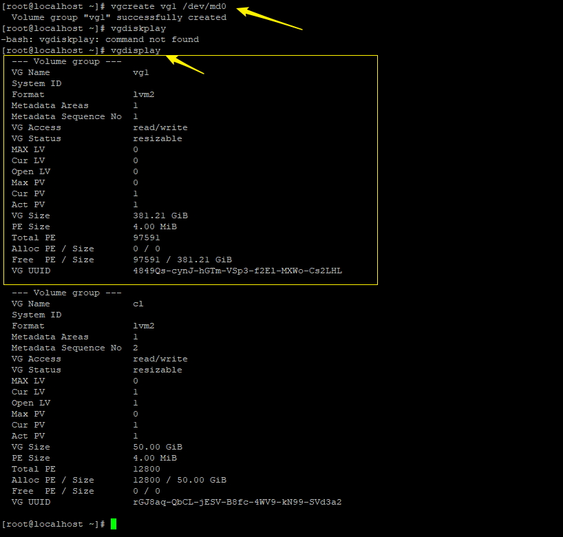
创建 逻辑卷(LV)
# lvcreate -L 40G -n lv1 vg1
在vg1的卷组上面创建一个名为lv1的逻辑卷，容量大小为40G， -L 后面接容量，单位可以是K，M，T，P，E ， -n 后面接LV的名称，最后是VG的名称
# lvdisplay
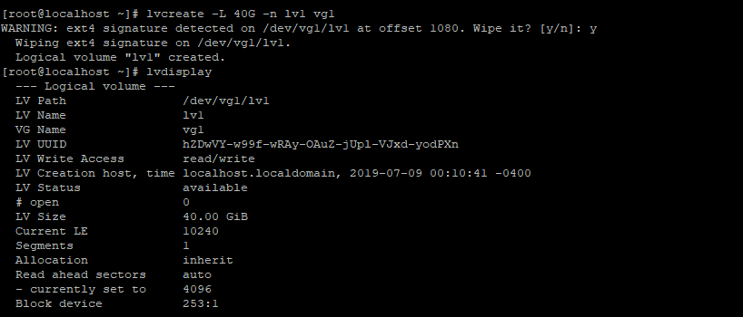
然后，我们需要格式化这个逻辑卷lv1，逻辑卷相当于磁盘分区，怎么理解就行了
# mkfs.ext4 /dev/vg1/lv1
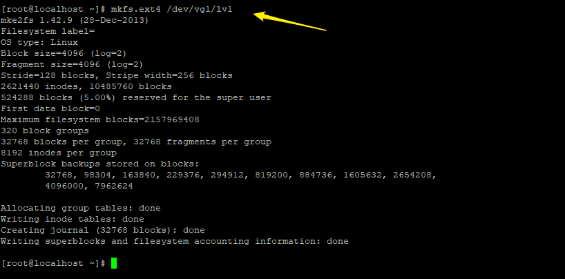
这里我将lv1格式为ext4 格式作为测试。
注意，你创建一个VG后，在/dev目录下面，会有相应的VG名称，例如：我创建了vg1，你能找到/dev/vg1/这个目录，在这个目录下面，有你创建的LV文件。以后你的挂载等操作，都可以调用这些文件。这个体现了Linux万物皆文件的概念吧
然后挂载
# mount /dev/vg1/lv1 /mnt/lv1
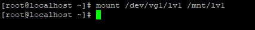
然后，我们重复上面的步骤，依次创建lv2,lv3
这是创建的结果
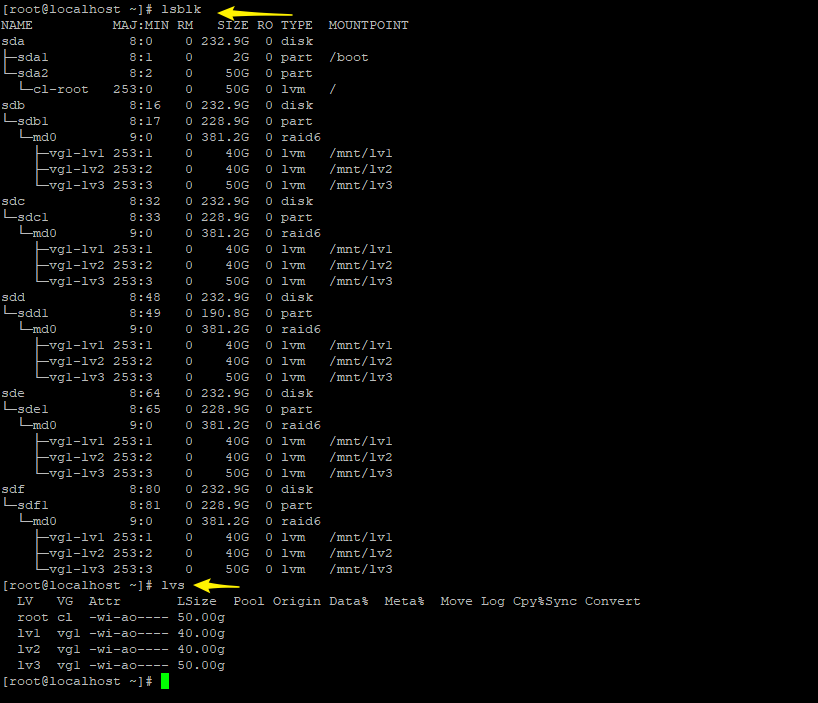
到此，我们创建了一个lvm。
扩展逻辑卷
假设lv1的容量不够用了，我们要增加容量，这里我增加了20G的容量
# lvextend -L +20G /dev/vg1/lv1
扩展后，我们如下图命令查看，发现文件系统并没有识别出磁盘的扩容的部分，因此，运行“resize2fs”这个命令，之后再执行“df -hT”查看，可以看到文件系统是扩容的了
# resize2fs /dev/vg1/lv1
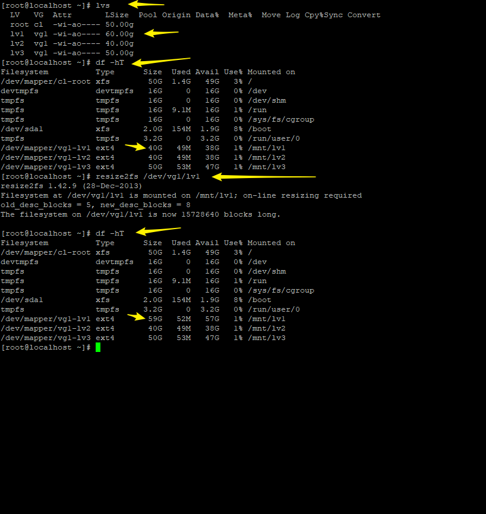
如果系统提示需要先运行fsck检查文件系统，则执行如下命令”e2fsck -f /dev/vg1/lv1”
扩展卷组
如果哪天发现vg1这个卷组的空间不够用了，我们可以扩展卷组，扩展卷组意味着增加磁盘
这里我再增加一块硬盘(/dev/sdg)（没错，我就硬盘多 ^_^)
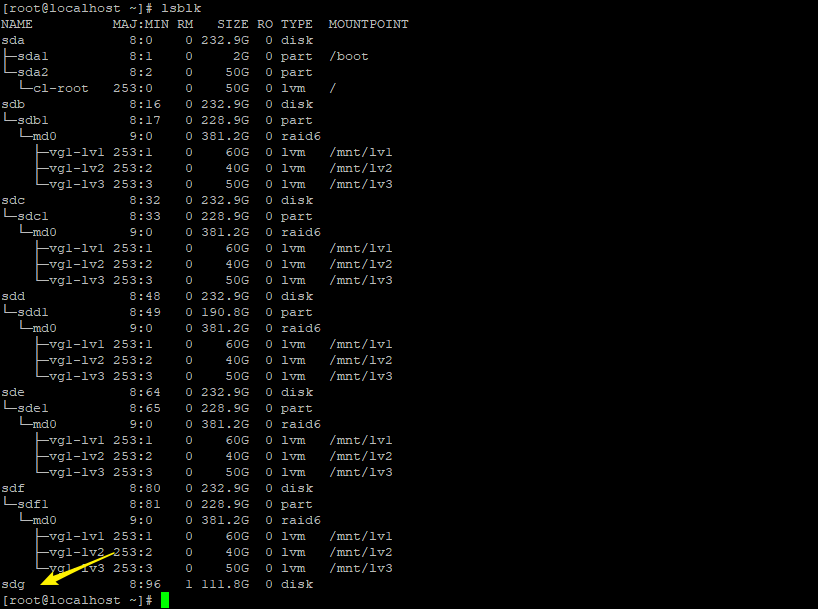
首先，我们检查一下这个硬盘
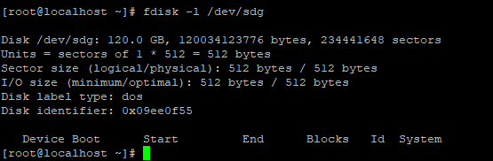
这里不需要创建分区，然后执行如下命令
# pvcreate /dev/sdg
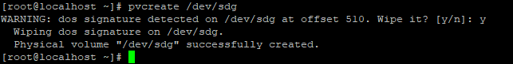
将sdg加入到vg1这个卷组里面，命令一下，效果立现
# vgextend vg1 /dev/sdg
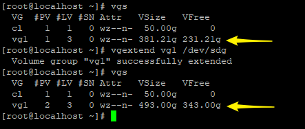
卷组扩容后，我们就可以愉快的扩展逻辑卷了
磁盘更换
假设哪天，这个sdg的硬盘寿命快到了，我们如何保护里面的数据？
我们可以将sdg的数据迁移到sdh。蛤！sdh哪来的？没错，我又加了一块硬盘！
确保sdh无分区，然后
# pvcreate /dev/sdh
然后将 /dev/sdh 加入到 vg1 这个卷组里面。注意，要迁移数据盘，两块硬盘必须在同一个卷组里面
# vgextend vg1 /dev/sdh
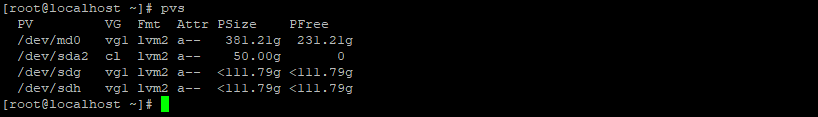
然后，执行下面的命令，将sdg的数据迁移到sdh
# pvmove /dev/sdg /dev/sdh
之后，使用如下命令将sdg从vg1移除
# vgreduce vg1 /dev/sdg
然后，再将sdg从PV中移除
# pvremove /dev/sdg
LVM 快照
后续补充
上面介绍了RAID和LVM的结合部署，那么问题来了，如果我的一个磁盘崩了，这个组合会怎样。这个问题困扰了我一周多，网上只有怎么创建，但是崩了，怎么修复，都找不到案例。。。。。
今天我就记录一下吧
RAID+LVM 硬盘崩坏修复
现在实验环境如下
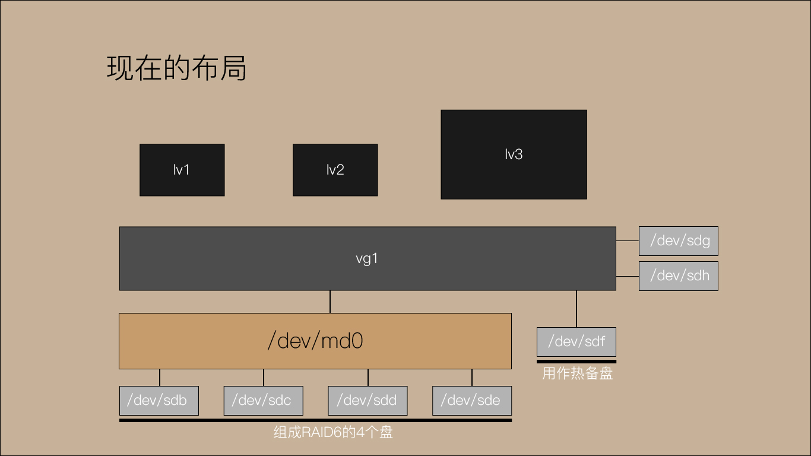
然后我要再一次模拟sdb这块硬盘崩掉的情况，看一下，系统能不能自动修复
在我设置阵列 f 参数之后，阵列会使用热备盘顶替，系统能够正常使用。
但是，我说但是，只要重启系统之后，使用 pvs 命令，直接提示错误，那个md0的PV直接变成【unknown】。。。。。这个问题花了一个多星期，也没搞定，所以，弃坑！
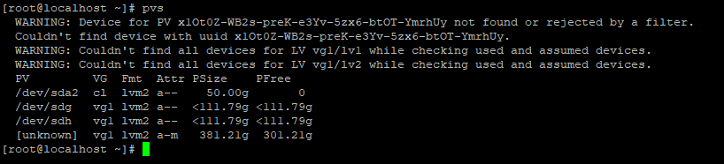
尽管有一个PV成了 unknown ，但是很神奇，上层的lv1，lv2等都能正常挂载使用，写入信息也可以，心中万马奔腾。。。。
补充：后续还有一个离奇的事情，在还原清空硬盘时，我把所有的lv，vg，pv都删除了，还是不让我删除md0，说后台还在使用md0，卧槽。。。。而且，重启一次电脑之后，原本unknown的那个pv，竟然识别出来了，f*** ，而且挂载后，数据都在，这个让我说啥好呢。。。。。。
后续一定要去弄清除这个LVM的底细
总结
鉴于上方出现那个pv成了unknown的情况，不打算继续研究下去，网上能找到的文档也很少，一开始我以为是我搜索姿势不对，后来我才了解到，RAID本身自带扩容功能，根本就不需要LVM辅助。果然，不对一个东西了解透彻，踩坑在所难免
所以，这个RAID+LVM的方案搁置，除非能找到上面问题的解决方案，不然不上正式环境。
后续的文章，开始实验RAID的扩容，这个应该比较简单了
所以，本文章就当作了解 RAID 和 LVM 使用方法的教程，看看就行
将硬盘初始化
经过上面的折腾，我们的硬盘已经写入了RAID+LVM 的信息，如果要重新实验折腾，就必须清空这些信息
接下来，来了解怎么重(删)置(库)环(跑)境(路)
删除 LVM
- 用umount卸载挂载的lv1，lv2，lv3
# umount /dev/vg1/lv[1-3]
- 删除逻辑卷lv[1-3]
# lvremove /dev/vg1/lv[1-3]
- 删除卷组vg1
# vgremove vg1
- 删除PV
# pvremove /dev/md0
到这里，我们成功将LVM删除了，后面，我们清空RAID阵列
删除 RAID
- 如果挂载了md0，请先卸载
- 先覆盖RAID的metadata
# dd if=/dev/zero of=/dev/md0 bs=1M count=50
- 停止md0
# mdadm -S /dev/md0
- 清除成员磁盘当中阵列的超级块信息，对所有磁盘也执行如下的命令
# dd if=/dev/zero of=/dev/sdb1 bs=1M count=50
这里就不一一列举了
- 查看阵列的情况
# cat /proc/mdstat
如果还是出现RAID的信息，重启一下服务器就行
参考的资料
Linux LVM学习总结——删除卷组VG
鸟哥 ，阵列知识
https://wizardforcel.gitbooks.io/vbird-linux-basic-4e/content/126.html
其他总结
LVM
- 重设逻辑卷大小，重置之后，需要同步一下文件系统大小，不然容量不会改变
# lvresize -L 3G /dev/vgname/lvname
- 为VG 添加新的PV
用命令 vgextend
- pvcreate 是提示“Device /dev/sdb not found (or ignored by filtering)”
可能 硬盘没有没有初始化
# dd if=/dev/urandom of=/dev/sdb bs=512 count=64
- 查看磁盘信息的一些命令
blkid
lsblk
df -hT
du
fdisk -l
- 很详细的LVM说明教程
- RAID + LVM 的说明
- LVM 创建快照
快照卷是对某逻辑卷进行的，因此必须跟目标逻辑卷在同一个卷组（VG）中；无需指明卷组
# lvcreate -s -L 200M -n snap_LV_name -p r /dev/vg/lv
- s ：创建快照卷
- p r ： 限制为只读访问
执行完后，会创建一个LV ，把它挂载起来就可以用了
快照卷的容量必须等同于逻辑卷的容量；
快照卷仅一次有效，一旦执行还原操作后则会被立即自动删除。
删除快照
lvremove /dev/vgroup/snap_LV_name
PE 和 LE
PE(Physical Extend)
PE是VG中的存储单元。实际存储的数据都是存储在这里面的。
LE(logical extent)
PE是物理存储单元，而LE则是逻辑存储单元，也即为lv中的逻辑存储单元，和pe的大小是一样的。从vg中划分lv，实际上是从vg中划分vg中的pe，只不过划分lv后它不再称为pe，而是成为le。
LVM之所以能够伸缩容量，其实现的方法就是将LV里空闲的PE移出，或向LV中添加空闲的PE。
LVM 写入模式
LV是从VG中划分出来的，LV中的PE很可能来自于多个PV。在向LV存储数据时，有多种存储机制，其中两种是：
线性模式(linear)：先写完来自于同一个PV的PE，再写来自于下一个PV的PE。
条带模式(striped)：一份数据拆分成多份，分别写入该LV对应的每个PV中，所以读写性能较好，类似于RAID 0。
尽管striped读写性能较好也不建议使用该模式，因为lvm的着重点在于弹性容量扩展而非性能，要实现性能应该使用RAID来实现，而且使用striped模式时要进行容量的扩展和收缩将比较麻烦。默认的是使用线性模式。
RAID
raid 0
代表了所有RAID级别中最高的存储性能
raid 1
镜像冗余 ，原始数据繁忙时，可以直接从奖项拷贝中读取数据，RAID 1 可以提高读取性能
在这里，需要注意的是，读只能在一块磁盘上进行，并不会进行并行读取，性能取决于硬盘中较快的一块。写的话通常比单块磁盘要慢，虽然是并行写，即对两块磁盘的写入是同时进行的，但因为要比较两块硬盘中的数据，所以性能比单块磁盘慢。
raid 5
磁盘空间利用率：(N-1)/N，即只浪费一块磁盘用于奇偶校验。至少需要3块硬盘
读性能：(n-1)*单块磁盘的读性能，接近RAID0的读性能。
写性能：比单块磁盘的写性能要差（这点不是很明白，不是可以并行写入么？）
冗余：只允许一块磁盘损坏。
做raid 5阵列所有磁盘容量必须一样大，当容量不同时，会以最小的容量为准。 最好硬盘转速一样，否则会影响性能，而且可用空间=磁盘数n-1，Raid 5 没有独立的奇偶校验盘，所有校验信息分散放在所有磁盘上， 只占用一个磁盘的容量。
raid 10
Raid10其实结构非常简单，首先创建2个独立的Raid1，然后将这两个独立的Raid1组成一个Raid0
冗余：只要一对镜像盘中有一块磁盘可以使用就没问题
raid 6
最少需要4个硬盘。同时两块磁盘损毁时，数据还是可以救回来。
SnapRAID
后续补充
RAID不是备份，重要数据，请做好备份
这里是RAID5坏盘后数据恢复的成功率的讨论，感兴趣可以看看
RAID5现在来看也存在风险，一是校验算法导致存在“write hole”导致存在数据不一致的问题，二是3TB、4TB硬盘商用后使得重建时间较长，在其期间极易第二块硬盘损坏导致RAID5崩溃
RAID5在如今已经没必要了，SSD的I/O秒杀机械盘，用SSD建RAID0，再加机械盘做RAID1同步。或者RAID1+SSD缓存
raid5加hot spare也就是所说的raid5+1.一旦raid5里面某块盘宕机，热备盘就会立刻替换宕机的盘。
4块盘做raid6基本相当于做raid1，不过比raid1更安全，同时允许任意两块盘宕机。
一些文献把这两种 RAID 等级看作是等同的，本文认为是不同的。 RAID01 是先做条带化再作镜像，本质是对物理磁盘实现镜像；而 RAID10 是先做镜像再作条带化，是对虚拟磁盘实现镜像。相同的配置下，通常 RAID01 比 RAID10 具有更好的容错能力。
RAID基础知识了解
-a(–add)，-d(–del),-r(–remove),-f(–fail)
https://wizardforcel.gitbooks.io/vbird-linux-basic-4e/content/126.html
l
mdadm 这套软件，这套软件会以 partition 或 disk 为磁盘的单位，也就是说，你不需要两颗以上的磁盘，只要有两个以上的分区 （partition） 就能够设计你的磁盘阵列了
硬件磁盘阵列的设备文件名为 /dev/sd[a-p] ，因为使用到 SCSI 的模块之故。至于软件磁盘阵列则是系统仿真的，因此使用的设备文件名是系统的设备文件， 文件名为 /dev/md0, /dev/md1…，两者的设备文件名并不相同
鸟哥的linux
https://wizardforcel.gitbooks.io/vbird-linux-basic-4e/content/126.html
查看硬盘 信息
hdparm -i /dev/sda
mdadm 参数
-a 检测设备名称
-n 指定设备数量
-l 指定RAID级别
-C 创建
-c 指定chunk大小，为2的整数次方，默认为64
-v 显示过程
-f 模拟设备损坏
-r 移除设备
-Q 查看摘要信息
-D 查看详细信息
-S 停止RAID磁盘阵列
-x 指定空闲盘的数量
[root@study ~]# mdadm –manage /dev/md[0-9] [–add 设备] [–remove 设备] [–fail 设备]
选项与参数：
–add ：会将后面的设备加入到这个 md 中！
–remove ：会将后面的设备由这个 md 中移除
–fail ：会将后面的设备设置成为出错的状态
启动 RAID
# mdadm -A /dev/md0 /dev/sd[b-f]1
注意，需要再次指定该raid中的设备成员，且和关闭前的成员一样，不能有任何不同
如果下次想直接使用-A参数激活，可以在停止RAID之前，扫描RAID，将结果保存到配置文件中，下次启动的时候直接读取配置文件即可
# mdadm -D –scan >> /etc/mdadm.conf
如果不放在默认配置文件中，者装配的时候使用“-c”或“–config”选项指定配置文件即可
# mdadm -D –scan >> /tmp/mdadm.conf
# mdadm -A /dev/md0 -c /tmp/mdadm.conf
重启raid mdadm -R /dev/md0
mdadm –examine /dev/sdb
** mdadm –manage /dev/md0 –add /dev/sdb **
组建raid阵列后，磁盘的物理插槽位置不能更改，不然阵列会出错
停止阵列：
https://blog.csdn.net/w849593893/article/details/82962322
https://www.cnblogs.com/f-ck-need-u/p/7049501.html
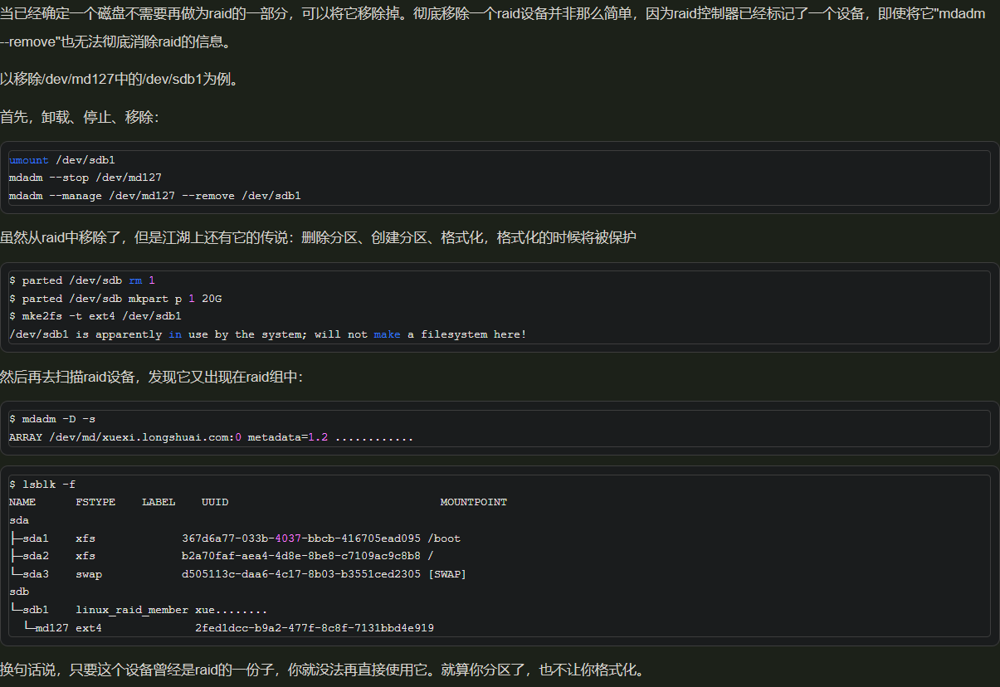
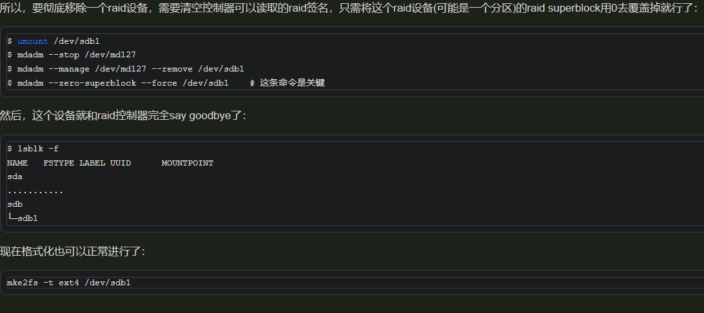
建议
在创建的时候，如果遇到坑，能Google解决最好，但是有些问题，没必要硬钻，不行的话，可以把整个测试环境重置，重头再来一遍，有时候，能有意外的收获。